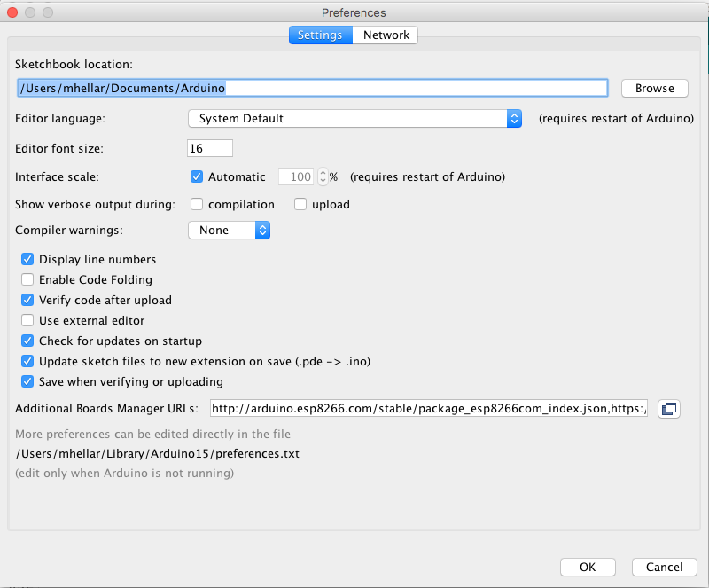

Addressable LED Workshop
Addressable LED Workshop
Addressable LED Workshop
Addressable LED Workshop
Code Here:
http://bit.ly/2kUhjBH
- Meet and Greet
- Parts Check and Overview
- Introduction to Addressable LEDs
- How to Solder
- Programming
- Persistence of Vision(POV)
Topics for Today:
Parts Check and Overview
Trinket Pro 5v
LiPo Lithium Ion Polymer Battery
Voltage Booster
APA102 LED Strip
Acrylic Wand
Velcro
Length of Paracord
Initial Prep
Plug the battery into the charger and Plug it into you USB port
Setting up the Arduino IDE
If you are Windows, Install this Driver
DriverOpen Arduino -> Go to Preferences
Paste This URL in the Additional Boards Manager
https://adafruit.github.io/arduino-board-index/package_adafruit_index.json
Next Open the Boards Manager
Search for Adafruit and install the Adafruit AVR Boards Manager
Now open the Library Manager
Serch for dotstar and install
Introduction to Addressable LEDS


Basic LEDS Need a lot of Wiring

Addressable LEDs provide circuitry to communicate serially

Each pixel has a Red Green and Blue LED and an chip to receive, decode, drive LED’s and propagate data

They are chainable, fairly cheap and have their own resistors etc..

You can drive 1000's from 1 microcontroller
Popular Types:
- WS2812 & WS2811
- APA102 (The “Superled”)
WS2812
Adafruit has branded these Neopixels

You can get them for half the price on Ebay as ws2812's

APA102
APA102 aka “Superled”Adafruit has branded these Dotstars
Adafruit has branded these Dotstars
Soldering
Lets Practice
Ok, Now the real deal
Solder the Brown Wire to G, Yellow to 5V, Red to 13 and Orange to 11
Flip the Trinket over
Solder the brown wire of the power boost to the - Pad and Red wire to the + pad
Flip the Trinket over
Solder the brown wire of the power boost to the - Pad and Red wire to the + pad
Open the Dotstar->Strandtest example
Change the Data pin to 11 and the Cloock pin to 13
Programming Excersise
open excercise.ino from the code folder
FastLED
FastLED
Let's Construct the wand
POV
open poi.ino from the code folder and upload